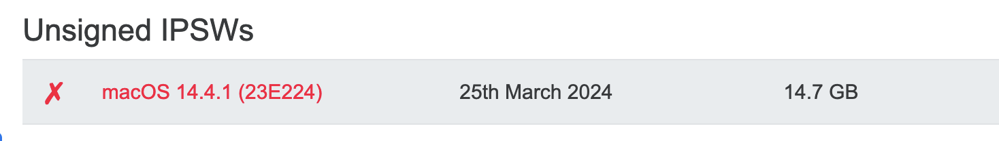
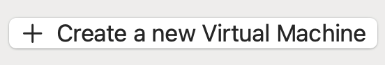
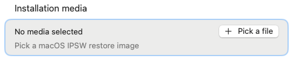
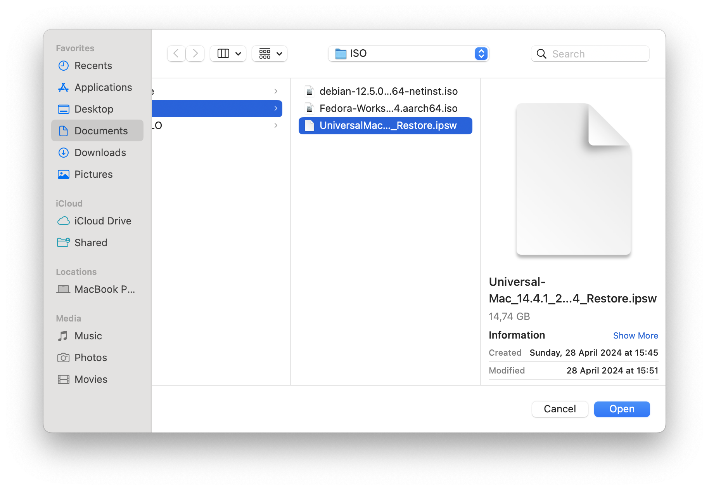
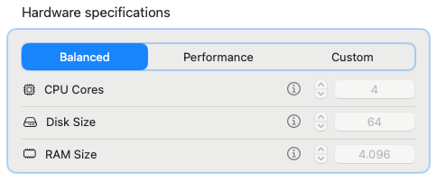
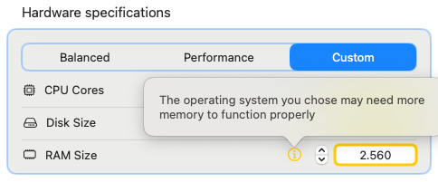
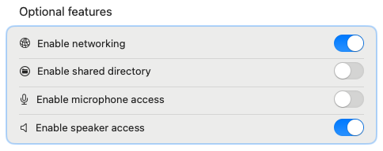
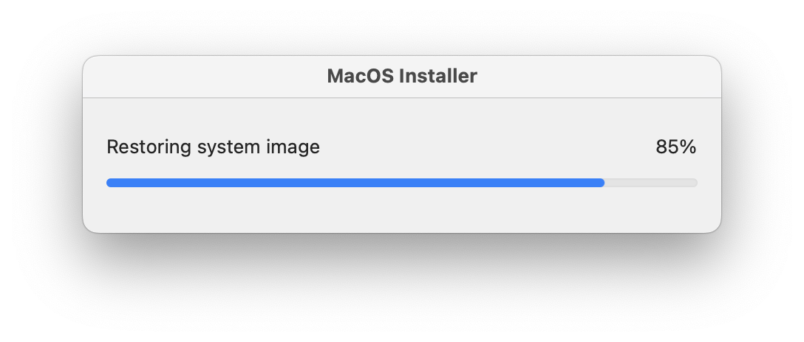

Before you start

Acquiring a macOS restore image
- Select the desired macOS version from the list of available images

- Click on the big blue download button
- Congratulations you have a restore image!
(Optional) While the gargantuan download finishes, you can sip off a cup of tea

Creation of the virtual machine
- Start VirtHandler, and click on "+ Create a new Virtual Machine"

- Under "Operating System", select macOS as the operating system of your choice

- Under "Generics", click on "+ Pick a file" to open the Finder file picker

- Select the .IPSW image you just downloaded

- Select the Performance profile that you prefer
TIP: Leave this setting on "Balanced" if you are not sure!
- In case of custom parameters: VirtHandler will notify you if the specifications you set don't meet the minimum requirements

- Select the optional features to enable for your virtual machine
NOTE: All of these options are straightforward. The only one that may require some extra explanation is "Enable shared directory": this option creates for you a folder that is shared between your physical mac and your macOS virtual machine, allowing you to transfer documents and other files facilitating your work.
- When you are satisfied with your options, click on Confirm and Create

macOS Installation Process
Select your newly created virtual machine from the menu on your left. You will see that the start button in the top right corner is locked.
- Click on the little Play button in the top right corner to start the VM

- Select "Confirm" when the alert dialog pops up

- The installation process will start, don't worry if it takes time!
(Optional) While the installation process finishes, you can drink a cup of coffee or stretch your legs a bit.

When the installation reaches 100%, a button labeled "OK" will appear on the installation dialog. Click it and profit!
A sidenote on this procedure
Don't throw away your .IPSW files! VirtHandler needs them to initialize your virtual machine every time you start the application. If the original file is deleted, or moved, the virtual machine will report a configuration error.
Don't worry, you can always tell VirtHandler to use another file: select your VM from the main menu and click on the installation media to select a new one.